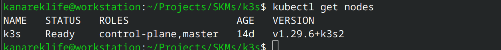

Kubernetes dla początkujących
jak zacząć zabawę z k8s "po kosztach"
Czym jest k8s?
- Kubernetes to system open-source do automatyzacji wdrażania, skalowania i zarządzania aplikacjami kontenerowymi
- Dzięki deklaratywnej naturze, możemy opisać docelowy stan a system automatycznie skonfiguruje maszyny
- Umożliwia lepsze wykorzystanie zasobów, ułatwia devops'om i developerom stawianie systemu oraz jego administrację
- Wydany przez Google w 2014 roku, obecnie zarządzany przez Cloud Native Computing Foundation
Czy k8s jest zawsze najlepszym rozwiązaniem?
Nie
Najczęstsze sposoby deploymentu aplikacji
| Instalacja aplikacji bezpośrednio na systemie operacyjnym | Automatycznie zarządzany deployment w chmurze (np. Azure AppServices) | Docker / docker-compose | Kubernetes | |
|---|---|---|---|---|
| Stopień skomplikowania | Wymaga znajomości Windows / Linux oraz środowiska aplikacji | Bardzo proste | Wymaga znajomości dockera. Sam docker-compose jest bardzo prosty | Złożona konfiguracja, wymagająca znajomości k8s |
| Koszt | Cena VPS + ew. licencje | Zależy od pakietu (zazwyczaj drożej niż VPS) | Cena VPS + ew. licencje | Koszt klasta (zazwyczaj najdroższe) |
Plusy k8s
- Mamy spory ruch i potrzebujemy skalować horyzontalnie nasze usługi
- Chcielibyśmy mieć ustandaryzowaną warstwę abstrakcji by łatwiej wdrażać nowe serwisy
- Nie chcielibyśmy być zbyt "vendor locked-in" i chcemy mieć możliwość późniejszej zmiany chmury na którą wdrażamy
- Chcielibyśmy korzystać z nowszych technik DevOps: GitOps, A/B Testing, Canary releases i inne...
- Pozwala lepiej rozłożyć zasoby sprzętowe
Minusy k8s
- Wymaga wiedzy i doświadczenia aby go poprawnie skonfigurować
- Niesie za sobą wyższe koszty (niż np. zwykły VPS) co może być dotkliwe zwłaszcza w przypadku środowisk testowych
- Wsparcie dla .NET Framework jest możliwe ale jest zdecydowanie mniej materiałów do nauki niż w przypadku .NET Core
- Zarządzenie i debugowanie klastra jest uciążliwe ze względu na stopień skomplikowania
Jak możemy zminimalizować te minusy?
W mojej opinii warto skorzystać tutaj z
Jak uzyskać klaster do nauki?
-
Managed k8s clusters (AKS, EKS, GKE, Linode, DO etc.)
- Stosunkowo wysoka cena
- Duży stopień skomplikowania; Wymaga wiedzy by poprawnie skonfigurować i nie zbankrutować
- Vendor Lock-In - Ciężko zmienić dostawcę (np. LoadBalancer, powiązane usługi, IAM i inne)
- Idealne na produkcyjny workload, często przesada na środowisko dev/test
-
BareMetal - CoreOS, RancherOS, VMWare i inne
- Szybkie, prostsze w instalacji na własnym systemie
- Ciężej skonfigurować i wykorzystać przestrzeń dyskową bądź resztę komponentów (karty graficzne etc.)
- Wymaga znajomości danego systemu; Uczymy się mniej uniwersalnych umiejętności
-
Instalacja na systemie operacyjnym - k3s, k0s, microk8s i inne
- Możemy normalnie korzystać z systemu, więc można łatwo przechowywać dane, konfigurować sterowniki i inne
- Korzystamy z popularnych programów więc uzyskujemy łatwo transferowalną wiedzę
- Najprostsza instalacja, która nie powinna stanowić problemu dla osoby z małym doświadczeniem z linuxem / serwerami
-
Rozwiązania lokalne - kind, minikube i inne
! Pomijam z uwagi na to, że o ile dobrze nadają się do nauki to jednak lepiej się bawić już na środowisku dev/test
Dlaczego wybrałem właśnie k3s?
- Małe wymagania sprzętowe - Do działania i podstawowej nauki wystarczy jakikolwiek VPS z 1 rdzeniem CPU i 1 GB ramu (co będzie kosztowało śmieszne pieniądze w porównaniu do cloudowych klastrów)
- Sane Defaults - Bardzo prosta i szybka instalacja (sam k3s to ~ 100 MB binarka napisana w go). k3s automatycznie konfiguruje LoadBalancer'a oraz Ingressa, dzięki czemu możemy od razu zabrać się za naukę bez nurkowania w wir tutoriali
- Dobre wsparcie zarówno dla x64 jak i ARM - co umożliwia zabawę z hostowaniem k8s na Raspberry PI, serwerach Ampere opartych na ARM i innych
- Czytelna i pomocna dokumentacja
- Darmowe i wspierane przez Cloud Native Computing Foundation
- Samo oprogramowanie napisane jest przez programistów z Rancher'a (by SUSE) - k0s - mirantis, microk8s - canonical
Jak zbudowany jest klaster k3s?

Kine - (Kine is not etcd) umożliwia utrzymywanie stanu klastra poza etcd (SQLite, MySQL, PostgreSQL, etcd)
Flannel - simple and easy way to configure a layer 3 network fabric designed for Kubernetes
Jak wygląda instalacja?
Instalacja głównego node'a
curl -sfL https://get.k3s.io | sh -
Instalacja i dołączenie do istniejącego klastra
curl -sfL https://get.k3s.io | K3S_URL=https://myserver:6443 K3S_TOKEN=mynodetoken sh -
- Plik
kubeconfigznajduje się w/etc/rancher/k3s/k3s.yaml - Jeżeli chcemy się połączyć zdalnie możemy podmienić IP / domenę w pliku i wrzucić na lokalnym komputerze w
~/.kube/config -
Teraz po wpisaniu:
kubectl get nodesPowinniśmy dostać:

Spróbujmy przetestować jak działa nasz klaster
- By zaprezentować podstawową funkcjonalność klastra, spróbujmy zdeployować prostą aplikację CyberChef.
- Jest to aplikacja czysto-frontendowa, także nie będziemy musieli się przejmować bazą danych, zmiennymi środowiskowymi i innymi tego typu rzeczami.